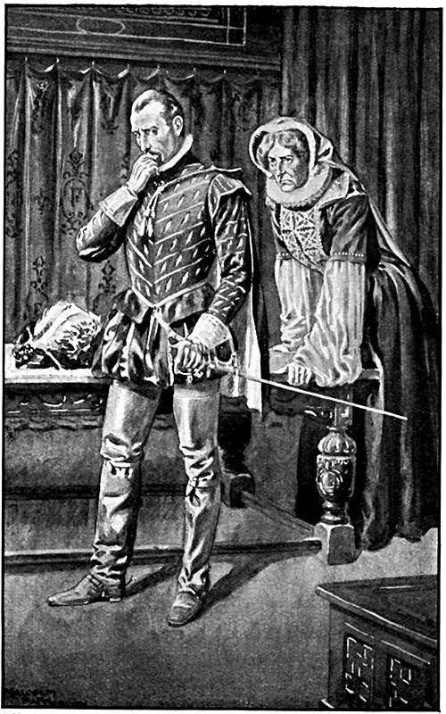

Когда на следующее утро из-за холмов, окружающих Париж, всходило ярко-красное солнце без лучей, как это бывает в ясный зимний день, на дворе Лувра все было уже в движении еще два часа назад.
Великолепный берберский жеребец, высокий и нервный, на сухих, с целой сеткой переплетающихся жил ногах, как у оленя, бил копытом о землю, прядал ушами и шумно выпускал горячее дыхание из ноздрей, ожидая Карла IX; но он был все же менее нетерпелив, чем его хозяин, задержанный Екатериной, которая остановила сына на ходу, чтобы поговорить, по ее словам, о важном деле.
Мать и сын стояли в стеклянной галерее: Екатерина – холодная, бледная, бесстрастная, как всегда, а Карл IX, дрожа от нетерпения, грыз ногти и стегал двух собак – своих любимцев, на которых надеты были кольчужные попоны, чтобы предохранить их от ударов клыков и дать возможность безопасно схватиться с ужасным зверем. На груди поверх кольчуги нашит был маленький щиток с гербом Франции, вроде тех, что нашивали на грудь пажей, которые не раз завидовали преимуществам этих любимых благоденствующих псов.
– Карл, примите во внимание, – говорила Екатерина, – что никому, кроме меня и вас, еще не известно о скором прибытии сюда поляков; а между тем король Наваррский – да простит мне бог! – ведет себя так, как будто он об этом знает. Несмотря на свой переход в католическую веру, который был всегда мне подозрителен, Генрих поддерживает сношения с гугенотами. Разве вы не заметили, что за последние дни он часто уходит из дому? У него появились деньги, а их у него никогда не было; он покупает лошадей, оружие, а в дождливую погоду по целым дням упражняется в искусстве фехтования.
– Ах, боже мой! – сказал Карл IX в нетерпении. – Неужели, матушка, вы думаете, что он собирается убить меня или моего брата, герцога Анжуйского? Тогда ему надо еще поучиться: не далее как вчера я налепил ему своей рапирой одиннадцать точек на колет, а он насчитал у меня лишь шесть. А мой брат Анжуйский фехтует еще искуснее меня или, по его словам, так же хорошо, как я.
– Послушайте, Карл, не относитесь так легко к тому, что говорит вам ваша мать. Польские послы скоро приедут – вот вы тогда увидите! Как только они появятся в Париже, Генрих Наваррский сделает все возможное, чтобы привлечь их внимание к себе. Он вкрадчив, он себе на уме, не говоря уже о том, что жена его, которая, неизвестно по каким причинам, ему способствует, будет болтать с послами, говорить с ними по-латыни, по-гречески, по-венгерски и так далее. Говорю вам, Карл, я никогда не ошибаюсь, – так я говорю вам: что-то затевается.
В эту минуту пробили часы, и Карл IX, перестав слушать Екатерину, прислушался к их бою.
– Смерть моя! Семь часов! – воскликнул он. – Час ехать – итого восемь! Час на то, чтобы доехать до места сбора и набросить гончих, – мы только в девять начнем охоту. Честное слово, матушка, вы вынуждаете меня терять время. Отстань, Удалой!.. Отстань же, говорят тебе, разбойник!
Он сильно хлестнул по спине молосского дога; бедное животное, изумленное таким наказанием в ответ на свою ласку, взвизгнуло от боли.
– Карл, выслушайте же меня, ради бога, – сказала Екатерина, – и не швыряйтесь вашей собственной судьбой и судьбой Франции. У вас на уме только охота, охота и охота!.. Выполните ваши обязанности короля и тогда охотьтесь сколько угодно.
– Ладно, ладно, матушка! – сказал Карл, бледнея от нетерпения. – Объяснимся поскорее, из-за вас во мне все кипит. Честное слово, бывают дни, когда я вас просто не понимаю!
И он остановился, похлопывая рукояткой арапника по сапогу.
Екатерина решила, что момент благоприятный и упускать его нельзя.
– Сын мой, у нас есть доказательства, что де Муи вернулся в Париж, – сказала королева-мать. – Его видел Морвель, которого вы хорошо знаете. Он мог приехать только к королю Наваррскому. Надеюсь, этого достаточно, чтобы подозревать Генриха больше чем когда-либо.
– Слушайте, опять вы против моего бедного Анрио! Вы хотите, чтобы я его казнил, да?
– О нет!
– Изгнал? Но как вы не понимаете, что в качестве изгнанника он гораздо опаснее, чем когда он здесь, у нас на глазах, в Лувре, где он не может сделать ничего, что не стало бы известно нам в ту же минуту!
– Поэтому я и не собираюсь изгонять его.
– Тогда чего же вы хотите? Говорите скорее!
– Я хочу, чтобы на время пребывания поляков он находился в заключении – например, в Бастилии.
– Ну, это уж нет! – воскликнул Карл. – Сегодня мы с ним охотимся на кабана, а он мой лучший помощник на охоте. Без него нет охоты. Черт возьми! Вы, матушка, только о том и думаете, как бы меня вывести из терпения!
– Ах, милый сын мой, разве я говорю, что сегодня? Послы приедут завтра или послезавтра. Арестуем его после охоты, сегодня вечером… нет… ночью.
– Это другое дело. Там увидим! Мы еще поговорим об этом. После охоты – я не возражаю. Прощайте! Сюда, Удалой! Или ты тоже будешь на меня дуться?
– Карл, – сказала Екатерина, останавливая сына за руку и рискуя вызвать этой задержкой новую вспышку гнева, – я думаю, что самый арест можно отложить до вечера или до ночи, но распоряжение об аресте лучше подписать сейчас.
– Писать приказ, подписывать, разыскивать печать для королевских грамот, в то время как меня ждут, чтоб ехать на охоту, а я никогда не заставлял ждать себя! Ну его к черту!
– Но я вас так люблю, что не собираюсь вас задерживать. Я все предусмотрела. Войдите сюда, ко мне.
Екатерина проворно, точно ей было двадцать лет, отворила дверь в свой кабинет, показала на чернильницу, перо, грамоту, печать и зажженную свечу.
Король взял грамоту и быстро пробежал ее:
– «Повеление… арестовать и препроводить в Бастилию брата нашего Генриха Наваррского». Готово! – сказал он, подписывая одним росчерком. – Прощайте, матушка!
И бросился вон из кабинета в сопровождении своих собак, радуясь, что так легко отделался от матери.
На дворе все с нетерпением ждали Карла IX и, зная его точность в делах охоты, удивлялись тому, что он опаздывал. Зато когда он появился, охотники приветствовали его криками, выжлятники – фанфарами, лошади – ржанием, а собаки – лаем.
Весь этот шум и крики возбуждающе подействовали на Карла; бледные щеки его покрылись румянцем, сердце забилось, и на одну минуту он стал юн и счастлив.
Король только кивнул всему блестящему обществу, собравшемуся во дворе, мотнул головой Маргарите, махнул рукой герцогу Алансонскому, прошел мимо Генриха Наваррского, делая вид, что его не замечает, и вскочил на своего берберского жеребца, который под ним запрыгал, но, сделав два-три курбета, почувствовал, с каким ездоком имеет дело, и успокоился.
Снова раздался звук фанфар, и король выехал из Лувра в сопровождении герцога Алансонского, короля Наваррского, Маргариты, герцогини Невэрской, мадам де Сов, Тавана и придворной вельможной знати.

Само собою разумеется, что Коконнас и Ла Моль входили в число дворян, сопровождавших короля.
Что касается герцога Анжуйского, то он уже три месяца отсутствовал, участвуя в осаде Ла-Рошели.
Пока ждали короля, Генрих Наваррский подъехал поздороваться со своей женой, которая, ответив на его приветствие, сказала ему на ухо:
– Нарочный из Рима был у герцога Алансонского. Коконнас лично ввел его туда на четверть часа раньше, чем посланный герцога Невэрского был принят королем.
– Значит, он знает все? – спросил Генрих.
– Наверняка, – ответила Маргарита. – Только взгляните, как блестят его глаза, несмотря на всю его способность скрывать и притворяться.
– Святая пятница! Еще бы, – прошептал Генрих, – сегодня он уже охотник на трех зайцев: Францию, Польшу и Наварру, не считая кабана!
Он поклонился жене и вернулся на свое место, затем подозвал одного из слуг, своего обычного посланца по любовным поручениям, родом беарнца, предки которого в течение столетия служили его предкам, и сказал:
– Ортон, возьми вот этот ключ и доставь его известному тебе кузену мадам де Сов, живущему у своей возлюбленной на улице Катр-Фис; скажи ему, что его кузина желает поговорить с ним сегодня вечером. Пусть он войдет ко мне в комнату и, если меня не будет дома, подождет; если же я очень запоздаю, пускай ложится спать на мою постель.
– Ответа не требуется, сир?
– Нет, только сообщи мне, застал ты его дома или нет. Ключ никому, кроме него, – понимаешь?
– Да, сир.
– Постой! Куда ты? Не уезжай от меня сейчас. При выезде из Парижа я подзову тебя, чтобы переседлать мне лошадь, – тогда будет понятно, почему ты отстал; исполнив поручение, догонишь нас в Бонди.
Слуга кивнул головой и отъехал в сторону.
Все общество двинулось по улице Сент-Оноре, затем по улице Сен-Дени и наконец достигло предместья; там, на улице Сен-Лоран, лошадь короля Наваррского расседлалась. Ортон подъехал, и все произошло, как было условлено между слугой и господином, который затем последовал за королевским поездом на улицу Реколе, в то время как верный слуга его скакал на улицу Катр-Фис.
Когда Генрих Наваррский присоединился к королю, Карл IX был занят интересным разговором с герцогом Алансонским о возрасте обложенного кабана-одинца, о месте его лежки и сделал вид, будто не заметил, что Генрих некоторое время оставался позади.
Маргарита все это время наблюдала издали за поведением их обоих, и ей казалось, что каждый раз, как ее брат-король смотрел на Генриха, глаза его выражали какое-то смущение.
Герцогиня Невэрская хохотала до слез, потому что Коконнас, особенно веселый в этот день, беспрестанно отпускал остроты, стараясь насмешить окружавших ее дам. Ла Моль уже два раза нашел случай поцеловать белый, обшитый золотой бахромой шарф Маргариты и сделал это с ловкостью, свойственной любовникам, так, что лишь три-четыре человека заметили его проделку.
В четверть девятого все общество прибыло в Бонди.
Карл IX первым делом справился, не ушел ли кабан. Обошедший зверя ловчий ручался, что кабан в кругу.
Закуска была уже готова. Король выпил стакан венгерского вина, пригласил дам к столу, а сам, от нетерпения и чтобы убить время, пошел осматривать псарню и ловчих птиц, приказав не расседлывать его лошадь, оправдывая это тем, что такой выносливой и сильной верховой лошади у него никогда не было.
В то время, когда король производил осмотр, приехал герцог Гиз. Он был вооружен, как будто ехал не на охоту, а на войну; его сопровождало человек двадцать или тридцать дворян в таком же снаряжении. Он тотчас осведомился, где король, пошел к нему и вернулся вместе с ним, продолжая какой-то разговор.
Ровно в девять часов король сам подал в рог сигнал «набрасывать» собак, все сели на лошадей и поехали к месту охоты.
По дороге Генрих Наваррский, улучив удобную минуту, подъехал еще раз к своей жене.
– Что у вас нового? – спросил он.
– Ничего, кроме того, что мой брат Карл как-то странно на вас посматривает, – ответила Маргарита.
– Я заметил.
– А вы приняли какие-нибудь меры предосторожности? – спросила Маргарита.
– У меня под одеждой кольчуга, а на боку охотничий испанский нож, отточенный, как бритва, острый, как игла, – я разрубаю им дублоны пополам.
– Ну, да хранит вас бог! – сказала Маргарита.
Доезжачий, ехавший во главе охоты, дал знак остановиться; охота подъехала к месту лежки.